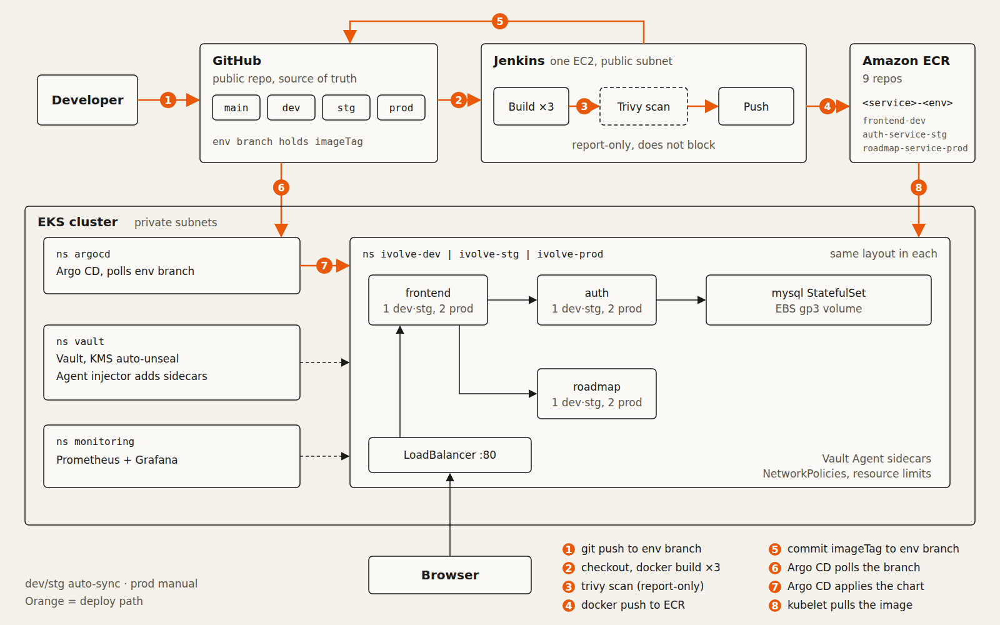
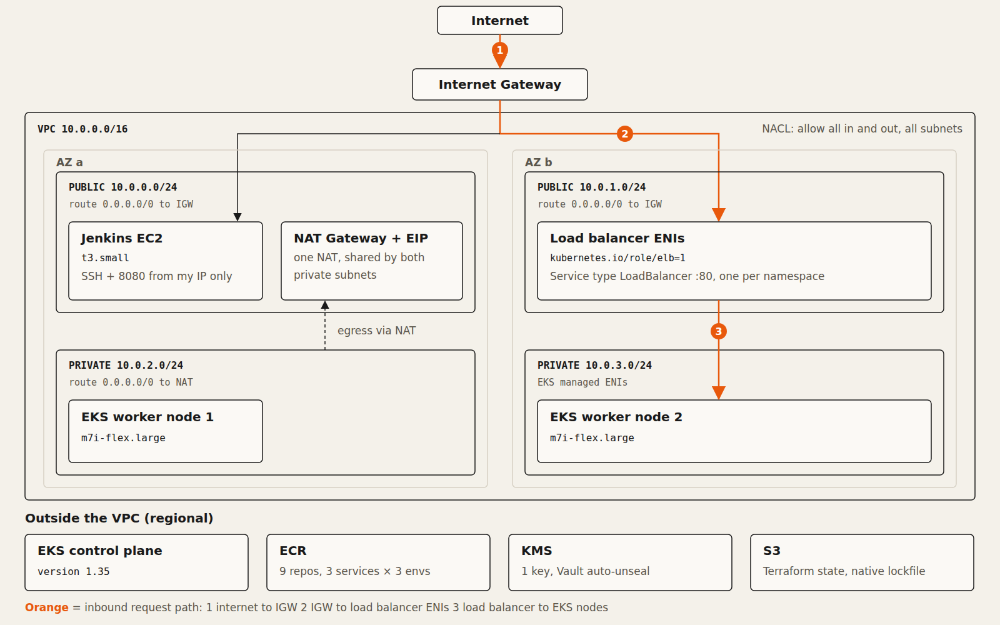
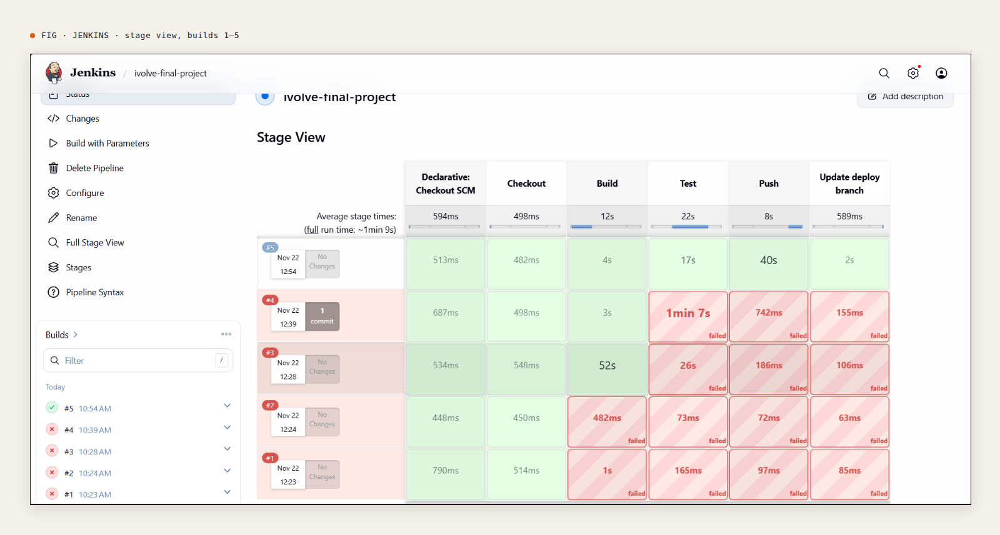
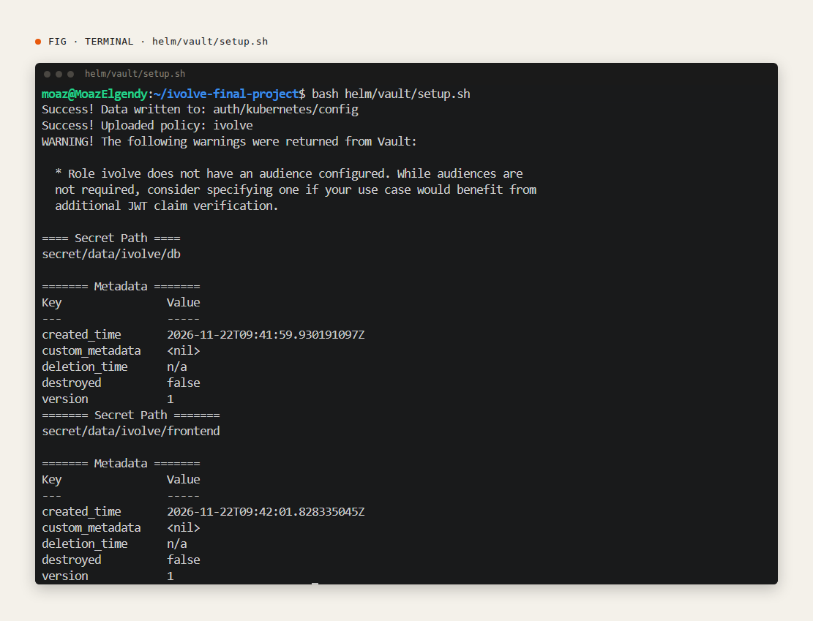
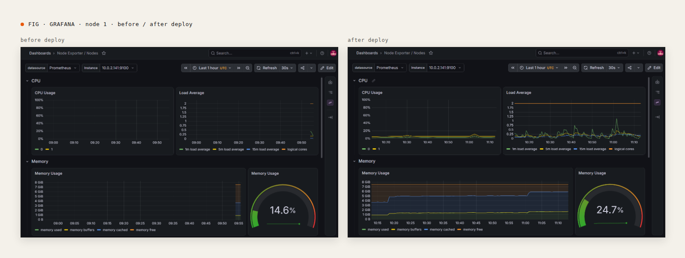
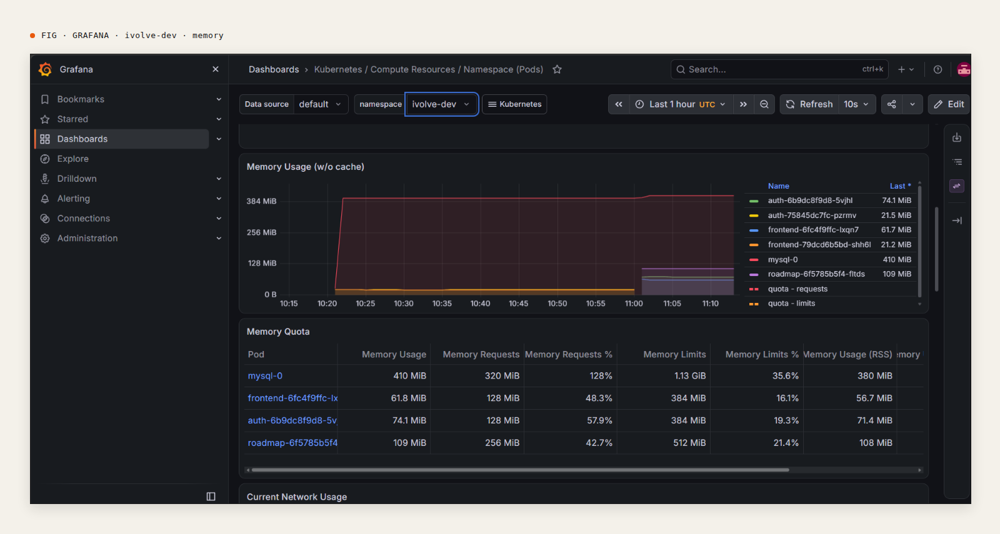

A three-service app, shipped from git push to EKS.
Terraform, Ansible, Jenkins with Trivy, Argo CD, Vault and Prometheus/Grafana on one EKS cluster.
Final project of the iVolve / NTI DevOps program.


Infrastructure
One Terraform stack with 4 modules, shared by all environments. State lives in S3 with a native lockfile; the bucket name contains the account ID, so it is passed at init through a git-ignored backend.hcl.


network
VPC 10.0.0.0/16, 2 public and 2 private subnets, internet gateway, 1 NAT, route tables, ELB subnet tags.
ec2
The Jenkins host: t3.small, 30 GiB encrypted gp3, IMDSv2 required, SSH and port 8080 only from my IP, ECR access through an instance role.
ecr
9 repos generated from setproduct(services, environments), scan on push, AES256.
eks
Cluster 1.35, 2 fixed on-demand nodes, vpc-cni with network policy, Pod Identity agent, EBS CSI, and the KMS key Vault unseals with.
Pipeline
One parameterised Jenkins pipeline (ENV is dev, stg or prod). The shared library provides buildImage, testImage and pushImage. Jenkins never talks to the cluster.
- Checkout the branch named by
ENV; the image tag is the build number. - Build the 3 images with
docker build. - Test each with Trivy, report-only.
- Push to ECR with the instance role.
- Update deploy branch by rewriting
imageTaginvalues-<env>.yamland pushing to the branch.


GitOps
Argo CD sees the imageTag commit, renders the Helm chart and applies it. Each environment is a git branch, an Argo Application, a namespace and a values file.


| Env | Branch | Sync | Namespace |
|---|---|---|---|
| dev | dev | automatic, prune, self-heal | ivolve-dev |
| stg | stg | automatic, prune, self-heal | ivolve-stg |
| prod | prod | manual | ivolve-prod |
Secrets
Database passwords and the session secret live in Vault (KV v2, auto-unsealed with KMS), not in git or Helm values.
- A pod starts with its ServiceAccount (
frontend,authormysql) andagent-injectannotations. - The Vault Agent Injector adds a sidecar.
- The sidecar logs in through Kubernetes auth, role
ivolve, 1 hour ttl. - Policy
ivolveallows readingsecret/data/ivolve/*. - The sidecar renders
/vault/secrets/dbor/frontend. - The container command sources that file, so the secrets become env vars.


helm/vault/setup.sh, run once after install.Observability
kube-prometheus-stack in its own namespace: Prometheus with 7 days of retention, Grafana reached by port-forward. I captured each worker node before and after the app was deployed.




ivolve-dev. Requests and limits are set per pod in the chart.Running cluster
Output from the live cluster on 2026-11-22: EKS in eu-west-1 with 2 nodes. The second container on auth, frontend and mysql is the Vault agent sidecar; roadmap uses no secrets, so it has none.
$ kubectl get nodes
ip-10-0-2-141.eu-west-1.compute.internal Ready v1.35.9-eks-9adbfea
ip-10-0-3-112.eu-west-1.compute.internal Ready v1.35.9-eks-9adbfea
$ kubectl get pods -n ivolve-dev
NAME READY STATUS RESTARTS
auth-6b9dc8f9d8-5vjhl 2/2 Running 0
frontend-6fc4f9ffc-lxqn7 2/2 Running 0
mysql-0 2/2 Running 0
roadmap-6f5785b5f4-fltds 1/1 Running 0Decisions and what broke
- Jenkins never touches the clusterIt builds, scans, pushes and edits
imageTag. Argo CD deploys, so cluster credentials never sit on the CI host. - Builds #1 and #2 failed at BuildThe
jenkinsuser had no Docker socket permission. I added it to thedockergroup; that now lives in the Ansibledockerrole, which restarts Jenkins. - Builds #3 and #4 failed at TestThe Trivy Java DB overflowed the 2 GiB RAM-backed
/tmp, and the exit code was blocking. Fix:TMPDIR=$HOME/trivy-tmpand--exit-code 0. Build #5 passed end to end. - Trivy is report-only, on purposeWith a blocking exit code, unfixed base-image CVEs failed every build. The trade-off: HIGH and CRITICAL findings are logged, not enforced.